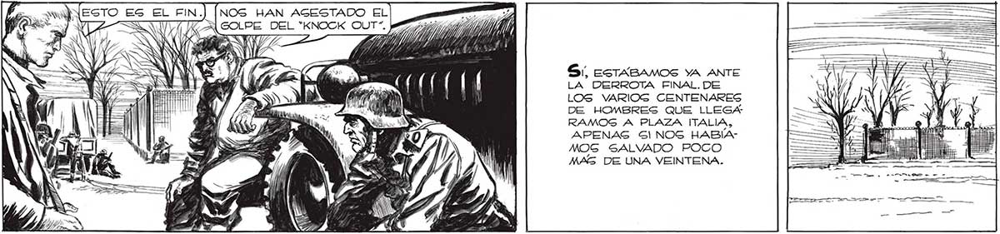
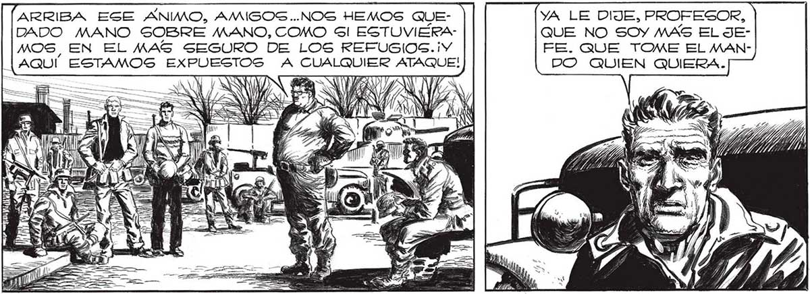

NOG HAN AGESTADO EL GOLPE DEL *KNOCK OUT”. AD 7 A “Y 20) LA DERROTA FINAL. DE LOS VARIOG CENTENARES DE HOMBRES QUE LLEGA N 5) a Y ] SI, ESTABAMOS YA ANTE RAMOS A PLAZA ITALIA, APENAS Sl NOS HABÍAMOG SALVADO POCO MAS DE UNA VEINTENA. Se Me HIZO UN NUDO EN LA GARGANTA.EL BUEN MOSCA. EL'HISTORIADOR”, ME SEGUÍA LEAL, CONFIABA CIEGAMENTE EN MÍ. EN Mí, QUE NO PODÍA HACER NADA POR AYUDARLO. NO TAN CURIOSO... LO QUE OCURRIO FUE QUE VIMOG QUE EL SEÑOR SALVO SE QUEDABA SOCORRIENDO AL PROFESOR. POR ESPERARLO NOS CONTUVIMOS, NO FPARTICIRBAMOS 7 ETT POT . DEL PÁNICO GENERAL, NO CORRIMOS A LA Gl, SEÑOR, NUESTRO GRUPO QUEDA GIENDO EL MAS EG CURIOSO... PERO CASI UN TERCIO DE LOG GOBREVIVIENTES SON VOLUNTARIOG. A TODOS NECEGITAMOS ARRIBA ESE ANIMO, AMIGOS..NOS HEMOS QUECONFIAR EN ALGUIEN. DADO MANO SOBRE MANO, COMO Sl ESTUVIERAÑ o MARTITA Y ELENA CON-| | | MOS, EN EL MAS SEGURO DE LOS REFUGIOS. ¡Y = MESES FAN EN MÚÓLO MISMO | | [AQUÍ ESTAMOS EXPUESTOS A CUALQUIER ATAQUE! DON 5 YA LE DIJE, PROFESOR, QUE NO SOY MAS EL JEFE. QUE TOME EL MANDO QUIEN QUIERA. A Sí 4 QUE PABLO, MOSCA Y LOS OTROS. YO CONFIO EN FAVA, EN EL MAYOR AUNQUE GÉ QUE EN EL FONDO, ELLOS SON TAN IMPOTENTES COMO YO, o

